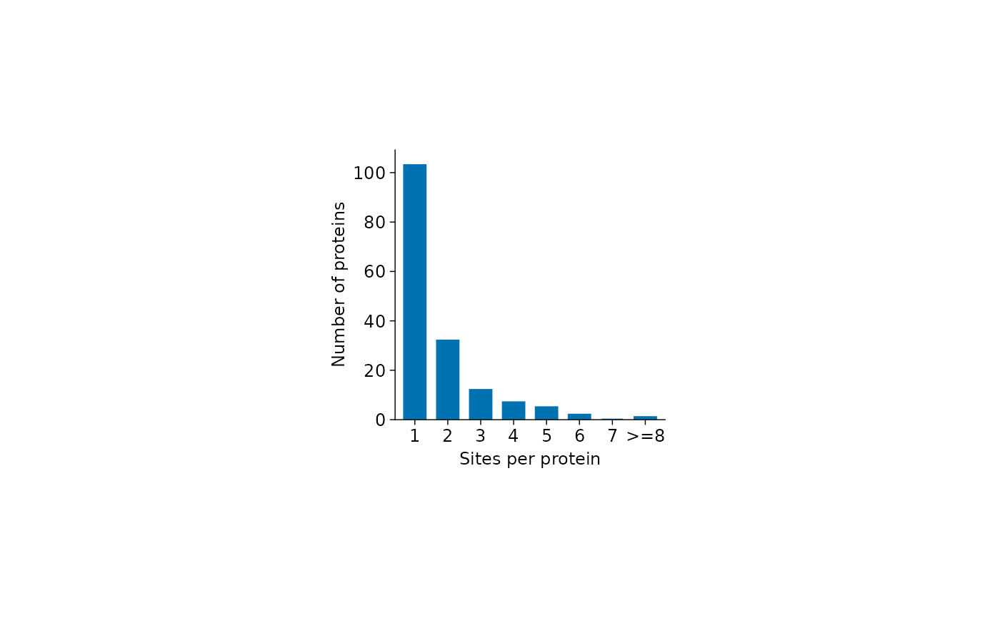

Step: Plot the glycosite profile
step_plot_glycosite_profile.RdPlot two count distributions for the current glycoproteomics experiment
(exp), pooling annotations across samples. Glycomics inputs skip this step.
Arguments
- glycan_col
Row-annotation column identifying glycans. With
NULL(default), completeglycan_structureannotations are used. If structures are absent or incomplete, a message is printed andglycan_compositionis used for the whole experiment, so structure and composition identifiers are never mixed. Supply a column name to select it explicitly.- plot_width, plot_height
Export width and height of each plot in inches.
Details
glycans_per_sitecounts sites by the number of distinct glycans observed at each protein and site position, usingglyvis::plot_glycans_per_site().sites_per_proteincounts proteins by the number of distinct glycosylation sites observed on each protein, usingglyvis::plot_sites_per_protein().
Examples
bp <- blueprint(step_plot_glycosite_profile())
if (requireNamespace("glyvis", quietly = TRUE)) {
result <- forge_analysis(glyexp::real_experiment, bp)
cast_plot(result, "glycans_per_site")
cast_plot(result, "sites_per_protein")
}
#> ℹ Glycosite profile
#> ✔ Glycosite profile [510ms]
#>
